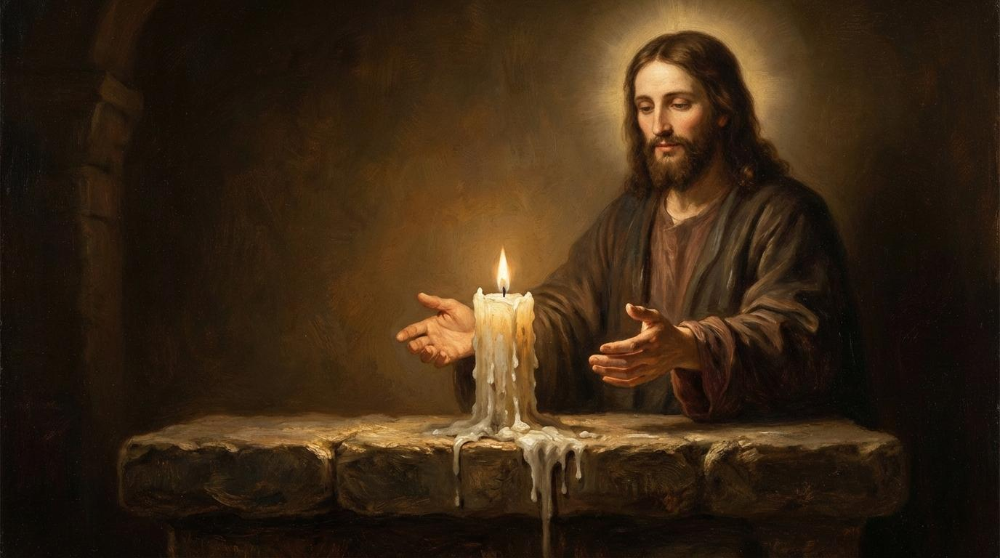
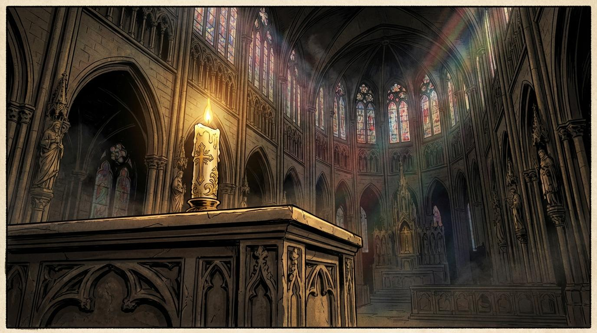
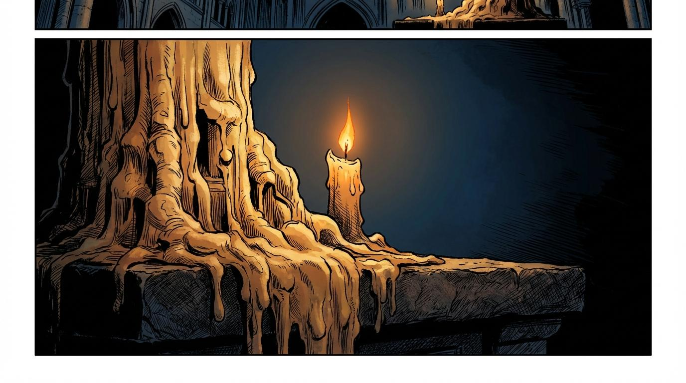
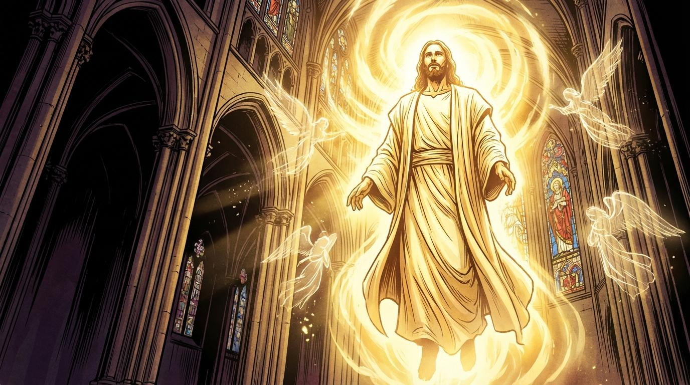
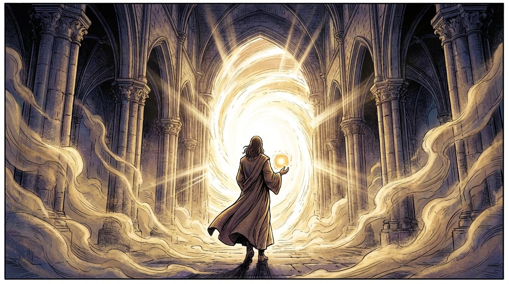

El Cirio
A Tale of Devotion

In the silent depths of a grand sanctuary, a tall candle stands upon the ancient stone altar, its flame burning with a steady, sacred light.

Time passes as the wax slowly dissolves, the candle's body diminishing until only a flickering spark remains in a pool of melted white.

At the moment the light nearly fades, the sanctuary is flooded with a celestial glow as Jesus Christ appears, His presence radiating divine power.

With infinite tenderness, Jesus reaches down and gathers the last essence of the candle, carrying it away into the light of eternity.
Eternal Light
Thank you for witnessing this offering. Like the candle on the altar that gives itself until the moment it is called home, we are grateful you shared in this journey. We hope this story has been a light in your path.
To help us continue creating stories of faith and devotion, please consider making a donation. Your support keeps the flame of our work burning bright.
Luz Eterna
Gracias por ser testigos de esta ofrenda. Como el cirio en el altar que se entrega a sí mismo hasta el momento de ser llamado, estamos agradecidos de que haya compartido esta jornada. Esperamos que esta historia haya sido una luz en su camino.
Para ayudarnos a seguir creando historias de fe y devoción, por favor considere realizar una donación. Su apoyo mantiene viva la llama de nuestro trabajo.